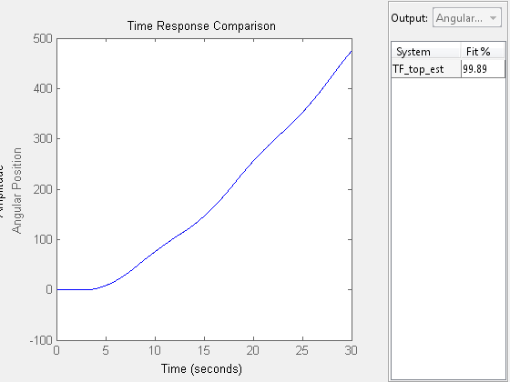
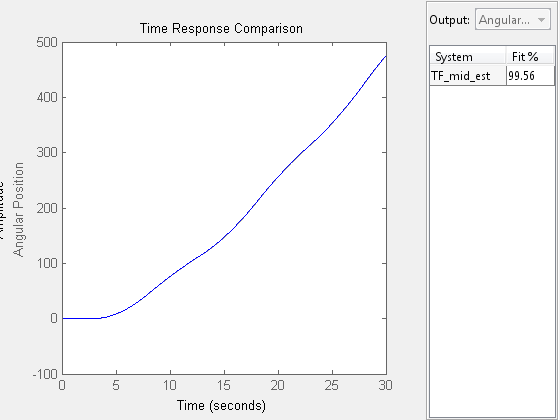
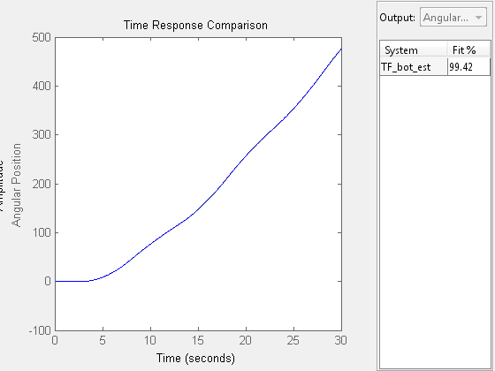

Contents
Clear out everything
clear all close all clc
Bring in Data
load('data_combined_new.mat')
Extract relevant experiments
top_experiments = [2]; % Which experiments to use for top mid_experiments = [2]; % Which experiments to use for middle bot_experiments = [2]; % Which experiments to use for bottom name_comb_bot = name_comb_bot(:,top_experiments); name_comb_mid = name_comb_mid(:,mid_experiments); name_comb_top = name_comb_top(:,bot_experiments); y_comb_bot = y_comb_bot(:,top_experiments); y_comb_mid = y_comb_mid(:,mid_experiments); y_comb_top = y_comb_top(:,bot_experiments); u_comb_bot = u_comb_bot(:,top_experiments); u_comb_mid = u_comb_mid(:,mid_experiments); u_comb_top = u_comb_top(:,bot_experiments); intr_smpl_val_top = repmat({'zoh'}, size(name_comb_top)); intr_smpl_val_mid = repmat({'zoh'}, size(name_comb_mid)); intr_smpl_val_bot = repmat({'zoh'}, size(name_comb_bot));
Create Objects
u_t_id_top = iddata(y_comb_top,u_comb_bot,[],'ExperimentName',name_comb_bot,'Domain','Time','SamplingInstants',t,'InterSample',intr_smpl_val_top,'TimeUnit','seconds','InputName',{'Torque'},'InputUnit',{'Nm'},'OutputName',{'Angular Position'},'OutputUnit',{'Radians'}); u_t_id_mid = iddata(y_comb_mid,u_comb_mid,[],'ExperimentName',name_comb_mid,'Domain','Time','SamplingInstants',t,'InterSample',intr_smpl_val_mid,'TimeUnit','seconds','InputName',{'Torque'},'InputUnit',{'Nm'},'OutputName',{'Angular Position'},'OutputUnit',{'Radians'}); u_t_id_bot = iddata(y_comb_bot,u_comb_bot,[],'ExperimentName',name_comb_top,'Domain','Time','SamplingInstants',t,'InterSample',intr_smpl_val_bot,'TimeUnit','seconds','InputName',{'Torque'},'InputUnit',{'Nm'},'OutputName',{'Angular Position'},'OutputUnit',{'Radians'}); opt = compareOptions('InitialCondition','zero');
Black Box Identification
iodelay = NaN; TF_top_est=tfest(u_t_id_top,6,5,iodelay,'Feedthrough','false'); TF_mid_est=tfest(u_t_id_mid,6,5,iodelay,'Feedthrough','false'); TF_bot_est=tfest(u_t_id_bot,6,5,iodelay,'Feedthrough','false');
Warning: The "feedthrough" option is ignored for continuous-time estimation. Use NZ<NP to enforce absence of feedthrough. Warning: The "feedthrough" option is ignored for continuous-time estimation. Use NZ<NP to enforce absence of feedthrough. Warning: The "feedthrough" option is ignored for continuous-time estimation. Use NZ<NP to enforce absence of feedthrough.
Comparison for Black Box
figure(1) compare(u_t_id_top,TF_top_est,Inf,opt) figure(2) compare(u_t_id_mid,TF_mid_est,Inf,opt) figure(3) compare(u_t_id_bot,TF_bot_est,Inf,opt) %getpvec(TF1_est) %advice(uin_tin_id);  
Grey Box Identification
%{ K1=par(1,1); J1=par(2,1); C1=par(3,1); J2=par(4,1); K2=par(5,1); C2=par(6,1); J3=par(7,1); C3=par(8,1); kh=par(9,1); %} % par = [2.7;0.02;0.01;0.02;2.7;0.01;0.02;0.01;1]; % aux = {}; % T = 0; % sys1_grey_id = idgrey('TDS',par,'c',aux,T); % sys1_grey_est = greyest(u_t_id_top,sys1_grey_id);
Comparison for Grey Box
figure(4) compare(u_t_id_top,sys1_grey_est,Inf,opt) getpvec(sys1_grey_est)